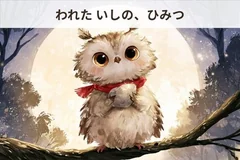

00
ウーハイについて
本業は会社員で、このサイトにあるものは全部、仕事の合間や休日に一人で作っている副業です。もともと絵が描けるわけでも、映像を作れるわけでもありません。ただ、生成AIがここ数年で一気に進んで、「一人でもキャラを作って、スタンプにして、絵本にして、ツールも映像も作れる」時代になったことに、単純に面白さを感じたのが始まりでした。
大事にしているのは、うまくいったことだけを並べないことです。実際には、思い通りにならないプロンプトのほうが多いですし、途中で没にしたキャラや企画もたくさんあります。そういう試行錯誤や判断ミスも含めて正直に出していくことで、副業や個人制作に興味がある人の「実験ログ」として少しでも役に立てばと思っています。
今のところ、LINEスタンプ・note・絵本・実用計算ツール・Chrome拡張機能・買い切りツール・動画・投資ブログ・カメラ入門サイトの9つのラインを並行して動かしています。どれも「AIでどこまでできるか」を確かめるための実験で、結果が出ないまま止まるものもあれば、続けるうちに形になってくるものもあります。このページは、その途中経過をまとめた場所です。
- 運営者
- ウーハイ(個人・副業運営)
- 運営開始
- 2026年
- なぜ複数のジャンルを同時にやっているのですか?
- 得意な一つに絞るより、生成AIで「一人でどこまで手を広げられるか」を試すこと自体が目的だからです。ジャンルごとに違う工程・違う難しさがあるので、比較しながら続けています。
- 全部AIで作っているのですか?
- 企画やコンセプト決め、最終的な品質チェックは自分で行っています。イラスト生成・文章の下書き・映像生成などの工程で生成AIを積極的に使っており、各コンテンツにその旨を明記しています。
- 更新頻度はどれくらいですか?
- ラインごとに異なります。noteは毎日、絵本とその他は制作の進み具合に合わせて不定期に更新しています。
01
LINEスタンプ
AIキャラを作って、スタンプ化して売れるのか。今も一人で実験を続けているシリーズ本体です。毒舌サラリーマンの「くたお」を1号として、ボロボロの幽霊「たそがれ」、正体不明の黒ずくめ「ズビズバ」、誘いを断り続ける「ムリ猫」、からかい専門アザラシの「アザトイ」と、キャラごとにあえて全く違う方向性で作っています。売れ行きそのものより、「AIでキャラを一から立ち上げて、ブランドとして成立させられるか」を確かめることが主な目的です。
02
note
AI業界ニュースの解説と、制作の舞台裏(失敗談・検証ログ)を毎日更新しています。ひとつは、AI業界の動きを追いかけて分かったことを、専門用語に頼らず自分の言葉でかみ砕く記事。もうひとつは、実際に手を動かした制作の裏側で、うまくいかなかったプロンプトや途中の判断ミスもそのまま書いています。きれいにまとまった話より、途中経過のほうが誰かの役に立つことがある、と思って続けている2本柱です。

03
絵本(Amazon KDP)
AI生成イラストで作る子ども向け絵本シリーズ。これまでに5巻を刊行し(日本語版・英語版あり)、6巻目を制作中です。イラストの生成から文章、Kindleでの個人出版まで、外注せず一人で完結させるチャレンジとして始めました。子どもが読んでも分かりやすい、優しい物語になるように意識していて、AIならではの絵の揺れをどう抑えるかも毎巻の課題です。
05
Chrome拡張機能
自分が仕事で欲しかったツールを、そのまま製品として作っています。日々の作業のなかで、プロンプトの管理や画面キャプチャなど「これがあれば楽なのに」と感じたものを、まず自分用に作るところから始めています。実際に自分が使い続けられたものだけを製品化しているので、機能は少なめですが、日常的に使う場面ははっきりしているはずです。
06
買い切りツール
単発課金・買い切り型のミニWebツールをBOOTHで販売しています。サブスクではなく買い切りにこだわっているのは、ちょっとした悩みを解決するだけのツールに継続課金は必要ないと考えているからです。LINEスタンプの審査基準チェックや、クリエイター向けの手数料比較など、実際に自分が欲しかったニッチな計算・確認ツールを、必要な機能だけに絞って形にしています。
買い切りツールは現在21本。どれも登録なしで使える無料版をブラウザで公開しています(下の一覧、認知目的の完全無料ツールを含む)。全ラインナップはBOOTHショップから。
07
動画
和×サイバーパンクの世界観で作る、AI生成の短編映像シリーズです。江戸時代的な和の意匠と、近未来的なサイバーパンクを掛け合わせた世界観を、AI動画生成技術だけでどこまで作り込めるかに挑戦しています。撮影も作画もできない一人の会社員が、プロンプトの試行錯誤だけで映像作品として成立させられるのか、その記録でもあります。
08
投資ブログ
個人の投資調査・企業分析を公開する新しいライン。売買の助言はせず、あくまで自分自身が調べたこと、比較したこと、記録したことを公開するスタンスです。何を買う・売るといった判断は読者自身に委ねるかたちで、調べる過程そのものを共有することを目的にしています。
09
カメラ迷子ノート
カメラを買う前の人、買ったけど使えていない人、続けるか迷っている人に向けた入門サイトです。運営者の私自身はカメラを持っていないため、体験談のようには書かず、ネットで見つかった人の声とメーカーの公開情報を出典つきでまとめる形にしています。文章の作成にはAIを使っています。